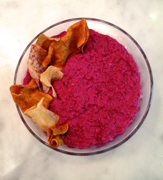
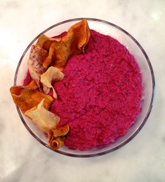

Beet Hummus
July 1, 2017
Beets are used in traditional cuisines everywhere from Eastern Europe to India. The roots are colorful, rich, sweet and packed with nutrients. This recipe uses the hearty red root to make a creamy hummus...

July 1, 2017
Beets are used in traditional cuisines everywhere from Eastern Europe to India. The roots are colorful, rich, sweet and packed with nutrients. This recipe uses the hearty red root to make a creamy hummus...